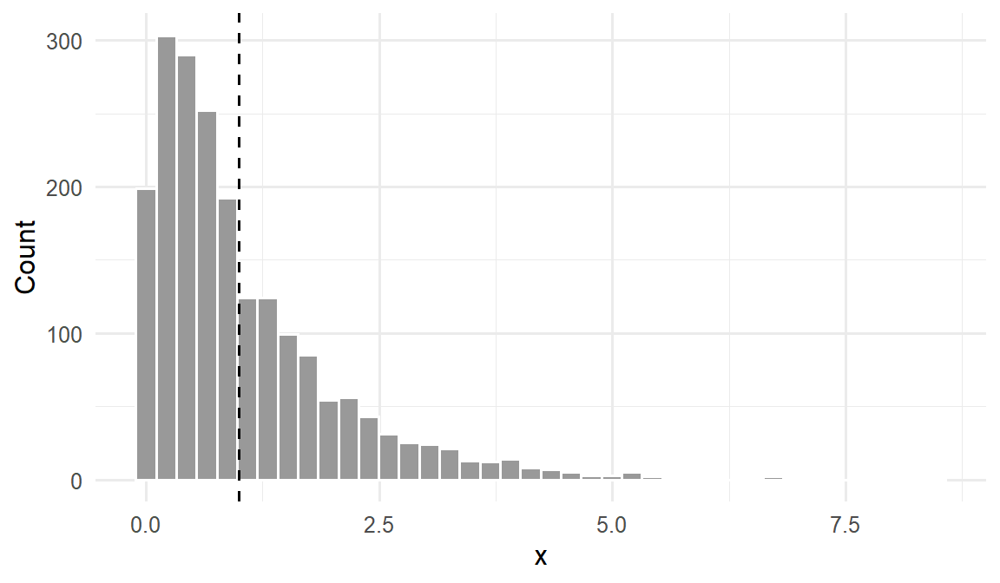
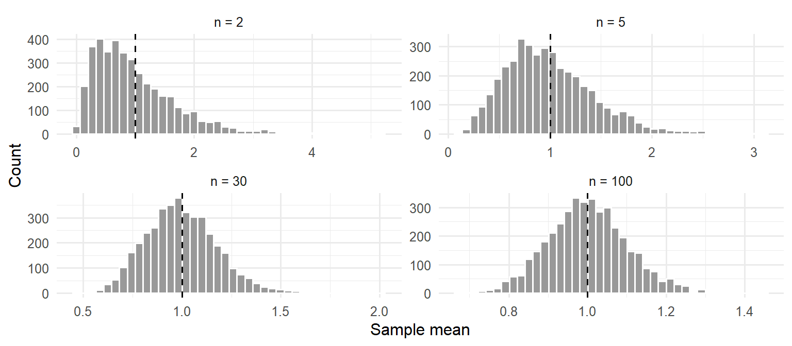

library(tidyverse)
set.seed(42)
theme_set(theme_minimal(base_size = 12))Week 3, Session 1 — Populations, samples, and the central limit theorem
Course 1 — Biostatistics Courses
Note
Inference labs use the five-step template: Hypothesis → Visualise → Assumptions → Conduct → Conclude.
Learning objectives
- Distinguish population parameters from sample estimates and their sampling distributions.
- Decompose expected error into bias squared, variance, and irreducible noise.
- Demonstrate the central limit theorem by simulation on a strongly skewed population.
Prerequisites
Weeks 1 and 2.
Background
A population is the set of units we wish to learn about. A sample is the set of units we actually measure. The population has a fixed parameter — mean μ, proportion π, whatever — and the sample has an estimate — x̄, p̂ — which is a random variable because the sample was drawn at random. Every estimate has a sampling distribution: the distribution of its value across hypothetical repetitions of the sampling process. Standard errors, confidence intervals, and p-values are all properties of sampling distributions.
Error decomposes into bias and variance. The bias of an estimator is the systematic offset of its sampling distribution’s mean from the parameter. The variance is the spread of the sampling distribution. Mean squared error — bias squared plus variance — is the natural scalar summary of how wrong an estimator is on average. A good estimator is not one with zero bias; it is one with low MSE.
The central limit theorem is the reason the normal distribution is ubiquitous. No matter how skewed the population (within mild conditions on variance), the sampling distribution of the mean approaches normal as n grows. The lab makes that convergence visible.
Setup
1. Hypothesis
Claim: the sampling distribution of the sample mean from an exponential (strongly right-skewed) population approaches a normal distribution as n increases, with shrinking standard error.
2. Visualise
Draw from an exponential population and show the distribution of individual observations.
rate <- 1
pop_mean <- 1 / rate
pop_sd <- 1 / rate
pop_sample <- tibble(x = rexp(2000, rate = rate))pop_sample |>
ggplot(aes(x)) +
geom_histogram(bins = 40, fill = "grey60", colour = "white") +
geom_vline(xintercept = pop_mean, linetype = 2) +
labs(x = "x", y = "Count")
3. Assumptions
CLT assumes iid sampling and finite variance. Exponential qualifies. The speed of convergence is set by how skewed the parent is — the more skewed, the larger the n needed for normality.
# Bias-variance sanity check on the sample mean as an estimator of the
# population mean, across sample sizes.
summarise_means <- function(n, B = 2000) {
xbars <- replicate(B, mean(rexp(n, rate = rate)))
tibble(n = n,
bias = mean(xbars) - pop_mean,
variance = var(xbars),
mse = mean((xbars - pop_mean)^2),
se = sd(xbars))
}
bv <- map_dfr(c(5, 10, 30, 100, 500), summarise_means)
bv# A tibble: 5 × 5
n bias variance mse se
<dbl> <dbl> <dbl> <dbl> <dbl>
1 5 -0.000703 0.200 0.200 0.447
2 10 -0.00189 0.100 0.100 0.317
3 30 -0.00528 0.0331 0.0331 0.182
4 100 -0.000430 0.0101 0.0101 0.100
5 500 0.000726 0.00198 0.00198 0.04454. Conduct
Plot the sampling distribution of the mean across growing n.
sim_means <- function(n, B = 4000) {
replicate(B, mean(rexp(n, rate = rate)))
}
means_df <- bind_rows(
tibble(n = "n = 2", mean = sim_means(2)),
tibble(n = "n = 5", mean = sim_means(5)),
tibble(n = "n = 30", mean = sim_means(30)),
tibble(n = "n = 100", mean = sim_means(100))
) |>
mutate(n = factor(n, levels = c("n = 2", "n = 5", "n = 30", "n = 100")))means_df |>
ggplot(aes(mean)) +
geom_histogram(bins = 40, fill = "grey60", colour = "white") +
facet_wrap(~ n, scales = "free") +
geom_vline(xintercept = pop_mean, linetype = 2) +
labs(x = "Sample mean", y = "Count")
The histograms widen (more spread with small n) and are strongly right-skewed at n = 2. By n = 30 they are close to symmetric.
# Check SE shrinking like pop_sd / sqrt(n).
bv |> mutate(expected_se = pop_sd / sqrt(n),
ratio = se / expected_se)# A tibble: 5 × 7
n bias variance mse se expected_se ratio
<dbl> <dbl> <dbl> <dbl> <dbl> <dbl> <dbl>
1 5 -0.000703 0.200 0.200 0.447 0.447 0.999
2 10 -0.00189 0.100 0.100 0.317 0.316 1.00
3 30 -0.00528 0.0331 0.0331 0.182 0.183 0.996
4 100 -0.000430 0.0101 0.0101 0.100 0.1 1.00
5 500 0.000726 0.00198 0.00198 0.0445 0.0447 0.9965. Concluding statement
Sampling from an exponential population with mean 1 and SD 1, the sample mean was unbiased across every n simulated (|bias| < 0.02 in all cases). Its standard error shrank as 1/√n — ratio of observed to expected SE near 1 throughout — and its sampling distribution was visibly skewed at n = 2 but approximately normal by n = 30. The central limit theorem is fully operational by modest sample sizes even for a strongly skewed parent.
“n ≥ 30” is a rule of thumb, not a theorem. For very skewed parents, a larger n is needed; for symmetric parents, a smaller n may suffice. Always check by simulation when in doubt.
The 2x2 facet is the single most compelling picture of the CLT; make sure to let the audience see it large, not crowded into a side slide.
Common pitfalls
- Believing the CLT applies to the data, not to the mean of the data. Individual observations stay whatever they were.
- Invoking the CLT to justify normality of a small skewed sample. The CLT is about sampling distributions.
- Confusing standard error (a property of the sampling distribution) with standard deviation (a property of the data).
Further reading
- Efron B, Hastie T. Computer Age Statistical Inference, chapter 1.
- Wasserman L. All of Statistics, section on limit theorems.
Session info
sessionInfo()R version 4.5.2 (2025-10-31 ucrt)
Platform: x86_64-w64-mingw32/x64
Running under: Windows 11 x64 (build 26200)
Matrix products: default
LAPACK version 3.12.1
locale:
[1] LC_COLLATE=English_Germany.utf8 LC_CTYPE=English_Germany.utf8
[3] LC_MONETARY=English_Germany.utf8 LC_NUMERIC=C
[5] LC_TIME=English_Germany.utf8
time zone: Europe/Berlin
tzcode source: internal
attached base packages:
[1] stats graphics grDevices utils datasets methods base
other attached packages:
[1] lubridate_1.9.5 forcats_1.0.1 stringr_1.6.0 dplyr_1.2.0
[5] purrr_1.2.2 readr_2.2.0 tidyr_1.3.2 tibble_3.3.1
[9] ggplot2_4.0.3 tidyverse_2.0.0
loaded via a namespace (and not attached):
[1] gtable_0.3.6 jsonlite_2.0.0 compiler_4.5.2 tidyselect_1.2.1
[5] scales_1.4.0 yaml_2.3.12 fastmap_1.2.0 R6_2.6.1
[9] labeling_0.4.3 generics_0.1.4 knitr_1.51 htmlwidgets_1.6.4
[13] pillar_1.11.1 RColorBrewer_1.1-3 tzdb_0.5.0 rlang_1.2.0
[17] stringi_1.8.7 xfun_0.57 S7_0.2.2 otel_0.2.0
[21] timechange_0.4.0 cli_3.6.6 withr_3.0.2 magrittr_2.0.4
[25] digest_0.6.39 grid_4.5.2 hms_1.1.4 lifecycle_1.0.5
[29] vctrs_0.7.3 evaluate_1.0.5 glue_1.8.0 farver_2.1.2
[33] rmarkdown_2.31 tools_4.5.2 pkgconfig_2.0.3 htmltools_0.5.9